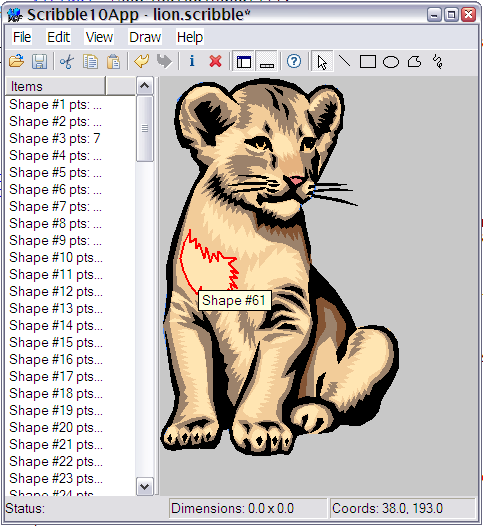

Title: MVC in the Visual Component Framework, Part III Author: Jim Crafton Email: jim.crafton@gmail.com Member ID: 12433 Language: C++ Platform: Windows Technology: Level: Intermediate Description: Part 3 of 4 that explores the Model-View-Controller Pattern in the Visual Component Framework Section Libraries SubSection General License: BSD

The previous article began developing a application based on useing the MVC pattern. This article will continue along those lines, demonstrating how to share a single model with more than one view/control, using menu items, status bars, mouse selection, modification of various shape attributes, and interactive scaling, translation, and rotation of a selected shape using the mouse. Some of the things discussed here don't exactly fall under the topic of MVC, but instead demonstrate how to make a full fldged application using the framework.
The first things we'll do is move the controller class into it's own header. This makes the application class code a bit cleaner to read.
Next we're going to change the UI. We're going to divide the main window into two halves, the left side will contain a list view of all the shapes in the current model, and the right side will hold our graphical view of the model. We'll use a splitter to allow us to manipulate the sizing of both halves:
object Scribble4Window : VCF::Window
object contentPanel : VCF::Panel
alignment = AlignClient
border = null
end
object scribbleListing : VCF::ListViewControl
alignment = AlignLeft
width = 100pt
border = null
iconStyle = isDetails
end
object splitter : VCF::Splitter
end
end
This will create our UI with it's 3 basic components. The contentPanel will
now become linked to our SplitterView instance. Before we do that let's introduce
an new element in our RTTI declarations: fields.
We can use VCF's RTTI fields to link a component declared in the VFF resource to a member variable in the C++ class. So we can associate the contentPanel object declared above with :
class Scribble4Window : public Window {
public:
Scribble4Window() {
}
virtual ~Scribble4Window(){};
Panel* contentPanel;
};
We do this by using the _field_obj_ macro like so:
_class_rtti_(Scribble4Window, "VCF::Window", "Scribble4Window") _field_obj_( Panel*, contentPanel ) _class_rtti_end_Presto! After the Scribble4Window is created and loaded with the contents of the VFF resource, the contentPanel will point to the correct instance. This means we don't have to use the Component::findComponent() method.
Now hooking up the view to the it's new control looks like:
class Scribble4App : public Application {
public:
virtual bool initRunningApplication(){
//rest omitted
ScribbleController* controller = new ScribbleController();
controller->setName( "controller" );
addComponent(controller);
Scribble4Window* mainWindow = (Scribble4Window*) Frame::createWindow( classid(Scribble4Window) );
setMainWindow(mainWindow);
ScribbleView* view = new ScribbleView();
mainWindow->contentPanel->setView( view );
mainWindow->scribble->addView( view );
controller->setControl( mainWindow->contentPanel );
controller->setModel( mainWindow->scribble );
//rest omitted
return result;
}
};
When Frame::createWindow() returns, the mainWindow->contentPanel is valid and we
can use it, in this case to set the view of the content panel, and add the
view to the scribble model.
In our app we have a the scribble view which renders the content of the scribble model. However, what if we wanted an alternate display of the data? For example, perhaps we want a list of all the shapes that make up the scribble model? No problem, that's why we added a list control, and set it's model to our instance of a scribble model. This works because models may have more than one view/control hooked up to it.
To do this, lets adjust our UI accordingly, altering the vff resource like so:
object scribbleListing : VCF::ListViewControl //rest omitted model = @scribble endThis assigns the list control's model to our scribble model instance. Because the scribble model is based on a ListModel, the list control can display all the shapes in the list. When the model is changed, the list's UI is updated automatically.
A status bar is simple to - we just use the StatusBar class. We don't need to specify any alignment, it's default is bottom alignment, which for our purposes is just fine.
object status : VCF::StatusBar height = 15pt status[0] = 'Status: ' status[1] = 'Dimensions: NNN x NNN' status[2] = 'Coords: NNNN, NNNN' endAssigning "segments" is pretty simple - we just access the status property and pass in some string labels.
Let's add some menus to make the application a bit more interesting. We'll add a simple Help > About... menu and a View menu that will allow us to toggle the visibility of our list on the left side and our status bar on the bottom.
object mainMenu : VCF::MenuBar
object help : VCF::DefaultMenuItem
caption = '&View'
object viewListing : VCF::DefaultMenuItem
caption = 'Shape &Listing'
checked = true
delegates
MenuItemClicked = [Scribble4App@Scribble4App::onViewListing]
end
end
object viewStatusbar : VCF::DefaultMenuItem
caption = '&Status Bar'
checked = true
delegates
MenuItemClicked = [Scribble4App@Scribble4App::onViewStatusbar]
end
end
end
object help : VCF::DefaultMenuItem
caption = '&Help'
object helpAbout : VCF::DefaultMenuItem
caption = '&About...'
delegates
MenuItemClicked = [Scribble4App@Scribble4App::onAbout]
end
end
end
end
This is fairly self explanatory, the MenuItemClicked is the delegate
that's fired when a user clicks on a menu item. The display will use the
ampersand("&") as a mnemonic, adding the "_" underbar to menu item captions.
The MenuBar is top level menu - you need only one of these. The rest of your
menu hierarchy, made of MenuItems, is constructed underneath.
The code for modifying the visibility of the status bar or the list control is pretty standard:
void onViewListing( Event* e ) {
Scribble4Window* mainWindow = (Scribble4Window*)getMainWindow();
mainWindow->scribbleListing->setVisible( !mainWindow->scribbleListing->getVisible() );
MenuItem* item = (MenuItem*)e->getSource();
item->setChecked( mainWindow->scribbleListing->getVisible() );
}
We toggle the visibility of the mainWindow->scribbleListing control, then
we alter the menu item that fired this event. Call MenuItem::setChecked()
will toggle whether or not the menu item displays a check box to the
left of the item caption.
To display our about dialog, we're going to load up a dialog based